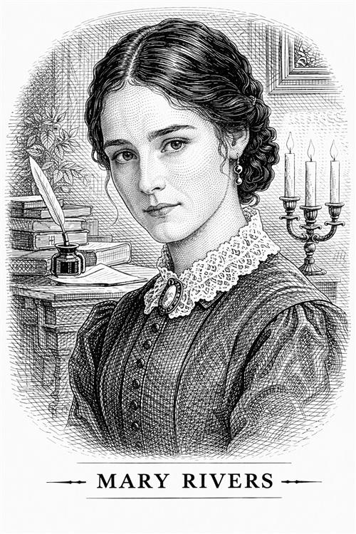

Mary Rivers

Mary Rivers es la hermana menor de Diana y, aunque suele aparecer en conjunto con ella, tiene matices propios que la hacen esencial para el bienestar de Jane en Moor House. Es la otra mitad de ese "hogar intelectual" que Jane tanto anhelaba.
Al igual que Diana, trabaja como institutriz para familias adineradas para mantenerse, regresando a Moor House solo en ocasiones especiales.
Personalidad e impacto en la vida de Jane
Si Diana es la líder vibrante, Mary es la presencia serena y constante. Se la describe como una joven de carácter dulce, inteligente y muy observadora. Comparte con su prima y su hermana la pasión por el estudio, la lectura y el dibujo. Es menos imponente que su hermana mayor, pero posee una firmeza interior y una independencia que Jane admira profundamente.
Mary contribuye a crear el ambiente de "estudio compartido" en Moor House. Ver a Mary y Diana estudiar alemán o dibujar permite a Jane recuperar su identidad como mujer culta después del trauma de huir de Thornfield.
Cuando Jane hereda la fortuna de su tío, decide dividirla en cuatro partes iguales para compartirla con los Rivers. La reacción de Mary (una alegría pura por poder dejar de trabajar como institutriz y vivir con sus hermanos) le da a Jane la satisfacción de saber que el dinero sirve para comprar la libertad de quienes ama.
Importancia del personaje
Mary (junto con Diana) personifica la situación de la "mujer educada pero pobre" de la época victoriana. Charlotte Brontë usa a Mary para mostrar que las mujeres con mentes brillantes a menudo eran forzadas a la servidumbre elegante (ser institutrices), y cómo el apoyo entre mujeres es lo único que hace esa carga soportable.
Mary es la prueba de que Jane no está sola en sus intereses y que existen otras mujeres con sus mismos principios y nivel cultural. Al final de la novela, Mary también se casa con un clérigo, asegurando así una vida de respeto y estabilidad.